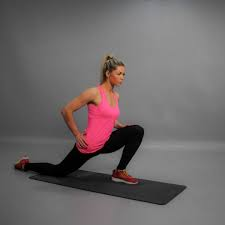
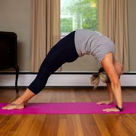

Downward Dog: Downward Dog stretches the hamstrings, calves, shoulders, and back. It also lengthens the spine and builds flexibility in the ankles and wrists.

Standing Pike: In the Standing Pike, you bend forward to touch your toes, deeply stretching the hamstrings, calves, and lower back. It also improves spinal flexibility and can release tension in the neck.

Sitting Pike: The Sitting Pike targets the hamstrings and lower back while also gently stretching the calves. It helps improve posture and forward-fold flexibility in the seated position.

Lunge: A standard lunge stretch works the hip flexors, quads, and glutes of the rear leg, and stretches the hamstrings of the front leg. It's commonly used to open the hips and improve lower-body mobility.

Modified Lunge: The modified lunge deeply stretches the back leg’s quads and hip flexors, especially the rectus femoris, by pulling the foot toward the glutes with the knee on the ground. It opens the front of the hips but doesn’t target the hamstrings like straight-leg stretches do.

Wolfe Stretch: The Wolfe stretch is an informal term for a deep lunge-based stretch targeting the hip flexors and quads, with the back foot pulled toward the glutes. It’s common in flexibility training for dance, gymnastics, and contortion.

Side Splits: Side splits stretch the inner thighs (adductors), hamstrings, and hip flexors. This position increases hip and leg flexibility and is used in dance, martial arts, and gymnastics.

Middle Splits: Middle splits target the inner thighs (adductors), hips, and groin, promoting deep lateral flexibility. This stretch improves side-to-side hip opening, increases mobility in the pelvic region, and strengthens joint control. It requires consistent practice and gradual progression to safely achieve full range without strain.

Bridge: The bridge stretch opens the chest, shoulders, hip flexors, and spine while strengthening the glutes and back. It also improves backbend flexibility and front-body extension.

Shoulders: Shoulder stretches (like arm crosses or wall stretches) improve mobility in the deltoids, rotator cuff, and upper back. These stretches help with posture and arm range of motion, especially useful for overhead activities.

Wrists: Wrist stretches (like palm-up/down flexes or floor leans) target the forearm flexors and extensors. They're essential for relieving tension and building flexibility in the wrists and hands, especially after typing or weight-bearing activities like yoga.